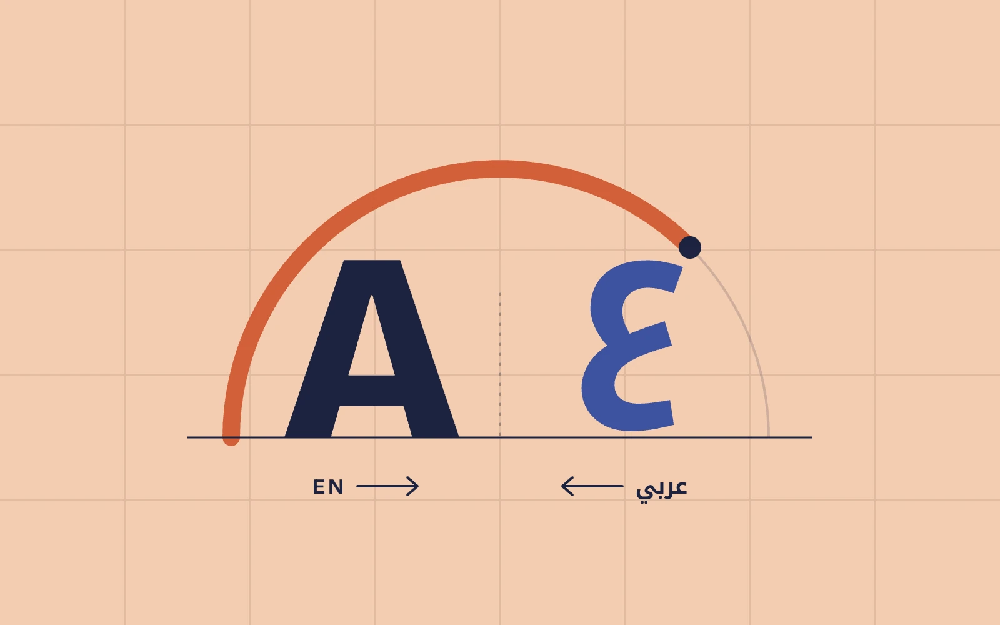
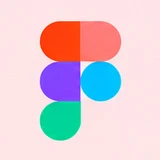
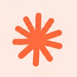
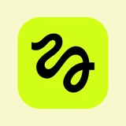

Selected work
Four stories from my desk.
Each project opens into a full case study: the problem, how I approached it, and what changed.

Redesigning a national credit-reporting app
New information architecture, security-first flows and a token-based design system for a bilingual consumer credit app.
Role: Sole Senior UI/UX Designer
Read case study
[Project image]
[Project name]
[One line: the problem you solved and what changed]
Role: [Your role]
Read case study
[Project image]
[Project name]
[One line: the problem you solved and what changed]
Role: [Your role]
Read case study
[Project image]
[Project name]
[One line: the problem you solved and what changed]
Role: [Your role]
Read case study
Toolkit
What I work with
Design

Figma- Adobe XD

Claude Design
Planning & delivery
- Jira
- Imgix
AI
- Claude Code

Higgsfield
Code
- HTML
- CSS
- JavaScript
About me